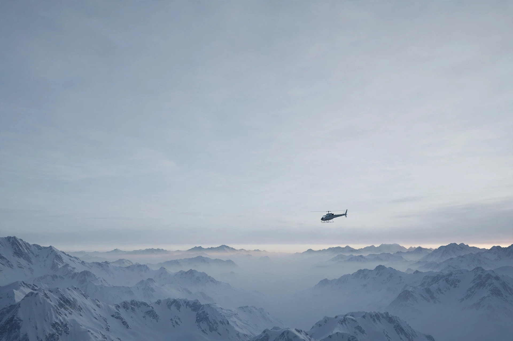
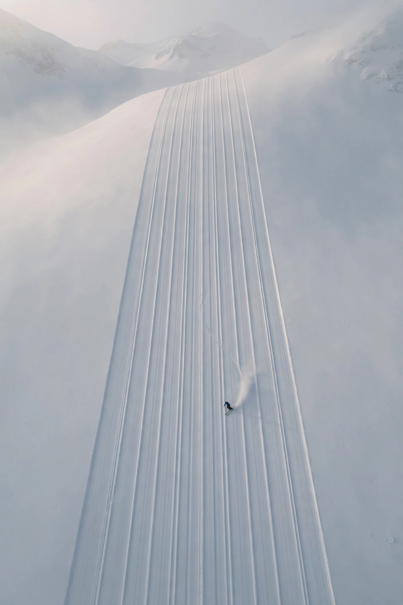
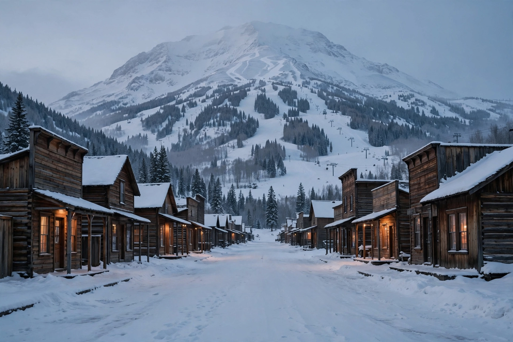

Via Denver, Salt Lake City, or Chicago O'Hare. No nonstop from BWI, and that is fine. Book together if you can: same connection means one shuttle to the house.

Ketchum, Idaho · 43.68° N, 114.36° W
Idaho, baby.
A full week in Ketchum for Clint, Mike, Cubby, and Boris.
One helicopter day on top.
Not Chamonix. Not France.
Not Italy. Idaho.
Last year's trip got washed out by weather, so this is the redo, done right. A full week in Sun Valley, a helicopter day on top, and a house two miles from everything. And yes, the wives will be super jealous.
Sun Valley Heli Ski holds exclusive access to about 750,000 acres, the largest heli permit area in the lower 48. Just the four of us on a big empty map. Guides pick terrain for four, not for a ski movie. Beacon and airbag pack are provided.
Wednesday, Feb 3, 2027 · 8 AM to 4 PM
Four single seats, the full A-Star for Clint, Mike, Cubby, and Boris. The whole ship is ours.
If weather cancels the heli, it is a 100% credit good for three years or a 50% refund, with Sun Valley Resort as the backup day.
That is a proper Baldy top-to-bottom, but in untouched backcountry. Six at this size is roughly 13,500 feet on the day.
Bald Mountain, locals just say Baldy, is a serious resort mountain right at the edge of Ketchum: consistent pitch, fall-line skiing, and famously uncrowded. Dollar Mountain next door is the gentle hill where the world's first chairlift ran in 1936.

River Run at the base is the morning meet point. Challenger and the gondola get you up fast, and the pitch basically never flattens out.
Dollar Mountain for first-morning legs, mellow cruisers, and zero stress before the heli day. Terrain parks too, if anyone is feeling young.
Sun Valley is famously uncrowded for a mountain this size. Expect short to no lift lines, especially midweek, which is exactly when we will be lapping it.

Downtown Ketchum at dusk, Baldy in the background. We are staying steps from this.
Walkable downtown, no chain sprawl. Hemingway finished For Whom the Bell Tolls here, and he is buried here. Ketchum was not a backdrop for him. It was home, and the town still feels literary, not manufactured.
Steak and prime rib, old Ketchum energy. The classic first-night move after everyone lands. Go early, it fills.
Low light, wood, proper cocktails at one of Hemingway's old haunts. The opposite of a base-village bar.
French classics, still open, still his favorite. White tablecloth without the fuss. Book it for the night after heli day.
Big breakfasts in Ketchum. Fuel before Baldy. You will need it after a 3,400-foot vertical day.
Cheap, loud, perfect. This is where the night ends when nobody wants it to end. Ketchum does dive bars right.
He lived here, finished a novel here, and is buried in Ketchum. That is why the town still feels like a place, not a product.
Home well before Valentine's Day and the Super Bowl on Feb 14. Nobody misses anything. That is the whole design.
Fly into SUN in Hailey, or drive in from Park City. Settle into the Knob Hill house. Pioneer Saloon that night.
Bald Mountain laps, Dollar Mountain, Ketchum dinners. Legs ready for the heli.
Sun Valley Heli Ski, 8 AM to 4 PM. Clint, Mike, Cubby, and Boris in the full A-Star. The headline act.
More Baldy, the hot tub, Michel's Christiania, The Casino. No rush.
Out of Ketchum, home a full week before Valentine's Day and the Super Bowl.
Friedman Memorial Airport (SUN) in Hailey is about 25 minutes from Ketchum. SUN flies nonstop to only eight cities: Chicago, Denver, Los Angeles, Phoenix, San Diego, San Francisco, Seattle, and Salt Lake City. Three of us fly in. One of us drives. Both ways work.
Via Denver, Salt Lake City, or Chicago O'Hare. No nonstop from BWI, and that is fine. Book together if you can: same connection means one shuttle to the house.
United via Denver or Delta via Salt Lake City are the natural routings. Denver is the easiest backup if weather gets weird: more frequencies, more options.
Roughly five hours, straight north. Utah sits directly south of Idaho, so this is driving into the trip, not away from it. No connection to miss, no shuttle to catch. He rolls into downtown while the flyers are still de-icing.
Once you land at SUN, Hailey to Ketchum is about 25 minutes. The free Mountain Rides bus covers Ketchum, Sun Valley, and both mountains all week, so nobody needs to be the hero driver. And because Cubby drives himself, the rest of us do not need a rental car.
Two miles. That is the whole week.
Pioneer Saloon, Sawtooth Club, The Casino, Michel's Christiania. The nightly loop, on foot. Open in Maps
The main base and morning meet point for the non-heli days. 3,400 feet of vertical above it. Open in Maps
Trail Creek Road by Sun Valley Resort. Wed Feb 3, 8 AM, full A-Star for four. Open in Maps
The Downtown Ketchum (Knob Hill) 4-bedroom home: tall ceilings, a stone fireplace, Bald Mountain through the glass, and a private hot tub on the lower patio, right off the game room.
Idaho, baby.
Not Chamonix. Not France. Not Italy. Idaho. The top heli outfit in the lower 48, a real mountain town, and a house two miles from everything. It is a better story.
Guest Portal paperwork from Clint, Mike, Cubby, and Boris. Five minutes each. That is the only annoying part.